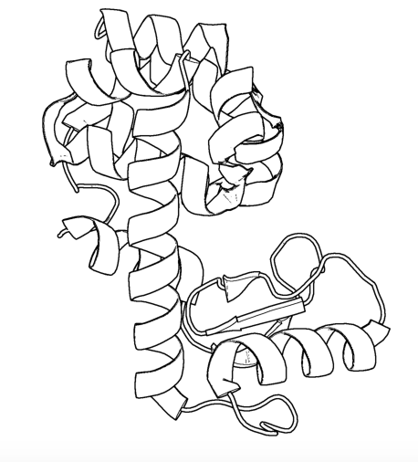
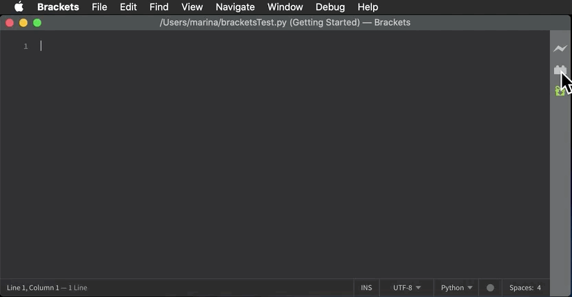
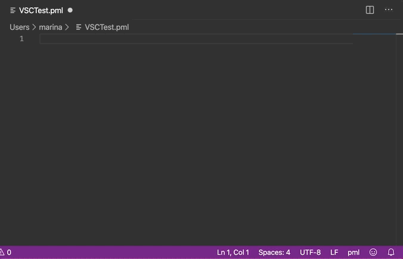

PyMOL is a leading molecular graphics program for making images of proteins and nucleic acids for publication.
PyMOL's vast array of parameters provides exquisite control over the appearance of the output.
PyMOL is often used to make cover images for scientific journals.
PyMOL is also popular for making movies of molecules.
The PyMOL GUI is useful for making the images of global scenes, but PyMOL rapidly becomes tedious to use to make images of detailed scenes.
The PyMOL macro language (pml) can be used to set parameter values and execute commands to make customized scenes of biomolecules in PyMOL's viewport.
These scenes can be made into static images for posters, seminars, and manuscripts, or they can serve as parts of molecular movies.
The macro language sends arguments to Python functions, but its syntax is simpler for non-programmers to understand than the syntax of Python code.
Over 100 lines of pml commands and settings are required to make more sophisticated images.
It is difficult to issue so many commands through PyMOL's graphical user interface (GUI) without making mistakes.
If the commands are not saved to an open script file with a .pml file extension, to an opened log file, or to a frequently saved session file, the work can be lost.
(Use the spse function in the pymolshortcuts.py file in the pymolshortcuts repository to save session files with time stamps to avoid overwriting previously saved session files.)
Here are of some figures that are impossible or tedious to make via the PyMOL GUI alone.
Gallery
Tab trigger
Output from code
Category and Description
ao
ambient occlusion
Applies a photorealistic effect. The effect is not available via a GUI pulldown mean. This code can be applied to any molecule in the sphere representaton. It applies ray tracing so moving the molecule in the viewport ruins the effect. Enter hide spheres to remove the spheres.
aod
ambient occlusion
This variant of ambient occulusion colors the carbon atoms black. This code can be applied to any molecule in the sphere representation.
aobw
ambient occlusion
This is the grayscale verison of ambient occlusions. Grayscale is not an option available through a pulldown in PyMOL. This code can be applied to any molecule in the sphere representation.
aodbw
ambient occlusion
This variant of ambient occulusion colors the carbon atoms black and then applies grayscale. Grayscale is not an option available through a pulldown in PyMOL. This code can be applied to any molecule in a sphere representation. (PBD: code 3nd3).
bw

black and white cartoon
This code can be applied to any molecule in a sphere, surface, or cartoon representation.
carved
carved electron density
A 2Fo-Fc electron density map is carved around a glycan.
coordinate
coordinate covalent bonds
Example of specifying coordinate covalent bonds between RNA and a sodium (colored purple). The coordinate covalent bonds are not diplayed by default in PyMOL; each atom pair in a coordinate covlent bond has to be specficied. The H-bonds were also specifid. This snippet can be used as a template for the commands needed to display coordinate covalent bonds and H-bonds.
filledring
filled-ring cartoon for nucleic acids
Filled ring cartoon for nucleic acids with the backbone highlighted by a flat ribbon.
sc222
Generate 2 x 2 x 2 array of unit cells with symmetry mates.
Run Thomas Holder's script supercell.py to generate 2 x 2 x 2 array of unit cells with symmetry mates filling the unit cells.
stack
Base stacking
Base stacking figure for a pair of base pairs with the top base pair colored dark to enhance the depth perception. The major groove is on the top.
It is challenging to recall the pml syntax when you are not using PyMOL every day, which is the situtation for most PyMOL users.
One solution to this problem is to use a library of code fragments, called snippets or templates, to build a script in a text editor.
Brief Notes on Installation and Updates
Users may want to update their copy of the library as new snippets are added to the library on GitHub.
The date of the last update and its nature are recorded in the GitHub repository.
GitHub has only experimental support for downloading part of a repository.
In the meantime, users must download the entire repository either as a zip file via the code → download zip pull-down menu or by entering the command git clone https://github.com/MooersLab/pymolsnips.git if they have git on their computer.
The second option enables subsequent updating of the library via the git pull origin master command.
Navigating this document
This document has over 12,000 words.
You do not need to read much of it to get started.
Just go to the section below about your favorite text editor to learn how to learn the snippet library.
This long document has a large number of hyperlinks that enable rapid movement to desired sites below and the return to the menus at the top of the file.
The hyperlinks reduce the need to scroll through the document.
Some of the text is hidden from view and has to be toggled or unfolded to expose it.
If you are considering switching text editors or have never used one, then you should invest an hour in reading the synopses of the 18 supported text editors.
This can serve as a guide to selecting a text editor.
Yes, we know.
We have too much information here for a standard README.md file.
We plan to move much of the detailed information below to a GitHub Pages webpage shortly.
pymolsnips is a library of pml code fragments that have been formatted for several popular text editors.
Note the word processors (e.g., MS Word, Libre Office, Open Office) are not included here: word processors should never be used to store computer code!
If you do so, you can inadvertently pick up hidden characters that are hard to find and remove during debugging.
In addition, word processing documents are usually binary files that are difficult to put under version control.
Text editors have tools for supporting the editing of computer code files.
Although these files have many different file extensions that map them to the programming language of the code that they contain, they are all plain text files.
One of the editing tools available in text editors is support for the retrieval and insertion of computer code fragments (i.e, snippets) to save time and reduce errors while assembling a new script file.
Protocols for snippet installation for each text editor are found below.
Some editors take snippet libraries in one file while other editors require that each snippet resides in a separate file.
Most editors have their own format for snippets.
The user downloads the file or folder of snippet files for their text editor and then installs the snippets according to the requirements for a particular text editor.
The one exception is the CudaText editor.
The snippets come pre-installed with this editor.
Each code fragment has a unique name that also serves as a tab trigger.
The user enters the name of the code snippet and hits the tab key to insert the lines of code.
Tab stops exist at sites where parameters can be edited.
Tab stops are mirrored when the parameters are identical.
Mirroring enable the simultaneous editing of these sites to reduce the chance of overlooking a site that needed editing.
The animation below demonstrates the use of the ao tab trigger in Visual Studio Code to insert 16 lines of code for generating the ambient occlusion effect.
You can learn how this is done here .
Two-levels of cascading menus appear.
The menu on the left shows the alternate tab triggers that contain the letters a and o.
The corresponding code for the selected tab trigger is displayed in the right window.
By entering these two letters, you have inserted 16 lines of code!
One thing to note when using tab stops is that the mirrored selections are very fragile:
Before you begin typing, make sure that the mirrored sections are all highlighted.
It is easy to exit the tab stop selections by the click of a mouse or even a keyboard movement!
Getting your selections re-highlighted is not difficult, but the required steps vary between text editors.
Find more information about mirrored tab stops in the installation instructions for each text editor.
The animation below demonstrates the use of mirrored tab stops where changed default values are mirrored at identical sites.
If mirrored tab stops are available for a text editor, you can learn more about them in the installation instructions of that text editor.
PyMOL scripts can be coded in electronic notebook, integrated development environments, and text editors.
All three types of coding platforms support the use of snippets to varying degrees.
Here, we foucs on text editors because the support for editing *pml* code is the strongest with this category of coding environment.
Note that some text editors use the same library of snippets.
For example, Emacs and spacemacs can use the same snippet library that is managed by the yasnippets package.
Likewise, Vim and neovim share some of the same plugin managers and snippet libraries.
There are at least three kinds of snippet systems available for Vim and neovim.
If you are considering switching editors, we recommend Visual Studio Code (VSC).
You do have to install plugins, but the process of doing so is quite painless.
Our second tier of text editors includes would be Sublime Text, Textmate, and Atom.
You might also consider Geany.
It is very lightweight, very fast, and very easily configurable.
It is a good editor if you care about agility.
See the following for second opinions on the best Python editor for beginners and for all users .
Note that the thonny editor that was recommended for beginners is more of a training tool than a productive tool.
It does not support code snippets, yet.
If your favorite editor is not listed, please post an issue here.
I will be notified immediately by e-mail and will try to develop a snippet library for the requested editor.
Note that some editors that are available as binaries only for Windows like Notepad++ can be run on Mac OS or Linux by using wine or wine bottler.
Some of these text editors can take hours to customize to fit your needs; however, you only need to know about 5% of the options to become productive with these editors.
Atom is a favorite of professional programmers because it is easily extended and customized.
Atom advertises itself to be the "hackable text editor".
It integrates with GitHub nicely, and the GUI is attractive.
Atom's startup speed bogs down as more plugins are added.
The work-around is to keep Atom open all of the time.
There is an extensive collection of plugins available for Atom.
The installation and updating of plugins can be slow compared to other editors.
Installing and using snippets with Atom
You will need the snippets package to be able to use the pymolpy snippets.
The package installer is very intuitive.
Go to Packages → Settings View → Install packages/themes.
Search for snippets and click the install button.
It may already be installed, but you must make sure that the snippets package is enabled (green bar along the button).
Shown below is an enabled snippets package.
Others have developed a PyMOL lexer for *Atom* so that you can enjoy syntax highlighting.
Go to Packages → Settings View → Install packages/theme and search for .language-pymol.
Click install.
The snippets for all programming languages are stored in a single file that is called snippets.cson.
The snippets for different languages are separated by the first line of a snippet library for a specific language.
This line contains a specification of the scope.
That is the kinds of script files to which a set of snippets applies.
The snippets.cson file is stored in a hidden folder on your home directory called ~.atom/snippets.cson.
You can concatenate this file of PyMOL snippets for Atom to your existing snippets.cson file.
To do this, Mac users enter: cp -a ~/pymolsnips/atompymolsnips/pymolsnippets.cson ~/.atom/snippets.cson
You can also access the snippets.cson file via the Welcome Guide of Atom, under the section called Add a Snippet → Open your snippets.
Or, you can access the snippets.cson file through Atom (menu) → Snippets....
For windows users, it might be easiest to access the snippets.cson file via the Welcome Guide.
Paste the snippets.cson provided here into this file.
A third option available for windows users, is to navigate to the .atom folder through the GUI of File Explorer and open the snippets.cson file.
Below is an example of the threeMaps snippet and a demonstration of its mirrored tab stops.
BBEdit requires a license and a one-time fee.
Major upgrades require additional fees. You will need macOS 10.14.2 or later.
The snippet system for BBedit is simple and elegant.
The snippets are stored as clippings with one snippet or clipping per file.
The PyMOL pml snippets end with the file extension *.pml.
The clippings can be stored in folders by language.
Installing and using snippets with BBEdit
Users can create nested subfolders for groups of related snippets.
The folders of clippings are stored in ~/Library/Application\ Support/BBEdit/Clippings.
You will need to add this snippets folder to your BBEdit clippings.
To do this, enter cp -a ~/pymolsnips/bbeditpymolsnips ~/Library/Application\ Support/BBEdit/Clippings/.
The disadvantages of these clippings include the lack of tab triggers and tab stops.
There is also presently the lack of a PyMOL lexer for syntax highlighting.
The development of Brackets is lead by a team at Adobe.
*Brackets* was designed for web developers with a focus on HTML, CSS, and JavaScript.
However, Brackets now has support for a large number of languages.
Brackets provides a Quick Edit and a Live Preview mode that run simultaneously, so changes in the pml code are dispayed immediately in the preview window.
Brackets has icons, located on the right panel, for navigating to the interactive settings on the application.
The zig-zag line launches the Live Preview.
The lego piece launches the extension manager.
Once you install an extension, a light bulb icon will appear that launches the Snippets Manager.
Installing and using snippets with Brackets
Go to File → Extension Manager or press the lego piece in the right panel.
Search for Brackets Snippets (by edc) and install it.
This is the snippet manager.
It has a GUI that enables the manual creation of user-defined snippets.

The GUI should automatically refresh, but if not, close and reopen *Brackets*.
The light bulb icon will now appear in the right panel.
Click on the light bulb to open the Snippets Manager.
The settings tab opens a menu with an import button.
Click import and choose the bracketspymolsnips.yml file that is available at the top of this page.
You have to download the file to your computer.
All of the snippets for PyMOL are in this single file.
The next step is to choose the import scheme.
I chose the recommended option to skip snippets with the same tab trigger name.
Until the PyMOL language is available via a lexer for Brackets, use Python for the scope of the pml files.
The Python lexer will provide some syntax highlighting.
This means that the PyMOL file needs to have a file extension of .py while it is being edited in *Brackets*.
When finished, save this file with the .pml extension to be able to use it in PyMOL.
In the example of snippet use shown below, notice how all snippets that begin with a are suggested.
Only when I press o do the suggestions narrow.
This is helpful when you cannot remember the short-hand for a snippet.
Unfortunately, Brackets does not currently support tab stops.
CudaText is a free, cross-platform editor that is written in Lazarus, a variant of Pascal.
Cudatext is open source.
Its predecessor was SynWrite, which is no longer supported.
CudaText has numerous plugins available to it.
A PyMOL lexer and PyMOL snippets are available through the CudaText add-ons manager (thank you Alexey T.!).
The documentation for CudaText is located here.
Installing and using snippets with CudaText
CudaText uses Python3 based plugins.
CudaText expects to find the Python3.X from Python.org.
I downloaded the 64-bit version of Python3.7.4 from Python.org and used the installer to install the binary in about five minutes.
This Python interpreter is installed in the /Applications directory on the Mac.
When I started CudaText, I did not have to edit any configuration files.
The snippets are stored one per file.
The files have the extensions of .cuda-snippet.
CudaText snippets have names (i.e., descriptions), ids (i.e., tab triggers), and markers (i.e., tab stops).
CudaText snippets are stored in the user's Library on the Mac: ./Library/Application\ Support/CudaText/data/snippets/Std.PML folder.
You may have to create the Std.PML folder by giving the following bash command: $ mkdir ./Library/Application\ Support/CudaText/data/snippets/Std.PML/
When executing CudaText for the first time on Windows, it will prompt you with the need for the extraction of files.
Proceed with the extraction and choose where you want the files to be extracted.
I chose to store it under C:\Users\YOURUSERNAME\AppData\Roaming\CudaText where I created the folder CudaText.
Create the Std.PML sub directory under C:\Users\YOURUSERNAME\AppData\Roaming\CudaText\data\snippets.
Any snippet add-on will automatically be installed in this directory.
Paste the files (not the folder) of cudatextpymolsnips into the Std.PML folder.
After starting CudaText, install the snippets plugin by navigating to the Plugins → Addons Manager → Install and search for plugin: Snippets and select it.
A pop-up window will appear asking you if you would like to install, click OK.
I could not screen capture this pop-up window.
You will also need to use the same pull-down to install the lexer: PyMOL and the snippets: PyMOL.
Restart CudaText to see the changes.
When editing snippets or plugins in CudaText you can also update them by going to Plugins → Addons Manager → Update.
CudaText allows you to edit mirrored sites for uniform editing.
The animation below shows how to edit one mirror location and travel to the other mirrored sites by hitting the Tab key.
Emacs is a free, open-source, cross-platform editor that is written in Emacs lisp (elisp), a variant of LISP.
LISP was developed in the early 1960s to support work on artificial intelligence.
Emacs was initiated in 1976 by Richard M. Stallman and others.
Emacs has a leadership succession plan that has been put into action.
Richard Stallman stepped away from the project in 2008, and others took over the maintenance of the core program.
This plan will greatly extend the lifetime of this software project.
Emacs has been around for 45 years.
According to Lindy's Law, the future life expectancy of a software program is proportional to its current age, so every additional period of survival implies a longer remaining life expectancy.
This law suggests that Emacs should be around for another 45 years.
Over 100 other variants of Emacs are available.
Spacemacs is a version that has a gentler learning curve in part because it can be driven by a menu of commands that is readily accessible.
Spacemacs allows the use of Vim key bindings, Emacs key bindings, or both.
Spacemacs does have its own keybindings that have to be mastered.
This leads to the problem of needing to translate Spacemacs to Gnu Emacs and back again when tapping into external Emacs resources.
Doom Emacs and Prelude Emacs are additional off-shoots of Emacs that are suppose to be easier to adopt.
They are similar to Spacemacs.
SciMax is a variant of Emacs that is being optimized to support scientific publication and literate programming.
For several reasons, we recommend becoming productive in GNU Emacs first before trying the Emacs variants.
First, the on-line resources that support mastery of GNU Emacs are far greater than the resources that support the variants.
Second, the documentation for the variants assumes a significant amount of prior knowledge of GNU Emacs.
Third, these variants run on top of GNU Emacs.
It takes one to two weeks of nibbling away at Emacs tutorials to become productive at text editing in Emacs.
There is a built-in tutorial in Emacs as well as many on-line tutorials.
A visually appealing tutorial is available here.
It takes several months to become competent in Emacs.
It takes a life-time to master Emacs hence Emacs is known as a life-time editor.
The one danger of Emacs is that it is easy to spend countless of hours configuring the init.el file and adding additional packages.
Many beginners spend too much time adding too many packages, most of which they never use.
As a beginner, you should ease off editing your init.el file if it has grown to 500 lines in the first several weeks of using Emacs.
A good practice is to add one package at a time and master each added package before adding another new package.
I find that editing of init.el file occurs in widely spaced bouts.
Once everything is working to your satisfaction, there may be long periods of productivity during which there is no compelling need to fiddle with the init.el file.
Many Emacs users have shared their init.el files on GitHub.
These can provide inspiration for the beginner.
Some have complex configurations that are often too complex to be copied and applied by the beginner.
Many of the add-on packages add functionalities that are not available in other text editors or that become available years later.
The vast group of active contributors to Emacs will probably keep it in the lead for a long time into the future.
Like PyMOL, GNU Emacs was designed to be highly extensible.
This is a large part of its popularity.
Over 4600 packages have been developed by users over the years.
Several package managers, including the melpa, greatly ease package installation.
However, manual installation is often quite simple.
The interface to Emacs is either a X-terminal window or a simple GUI that can be made complex by opening many buffers, which are like windows.
The management and navigation of buffers is a skill that the beginner needs to master early.
Emacs is designed to enable mouse free work although some buffers require that selections be made by using the mouse.
Emacs is infamous for having 1800 key bindings involving multiple keys.
The key bindings make heavy use of the alt or meta key.
However, there is in-line documentation, and some packages provide autosuggestions that greatly ease the discovery of new key bindings.
You only really need to memorize several dozen key bindings to become productive in Emacs.
The remaining knowledge is easy to acquire on an as-needed basis.
Vim users can quickly become productive in Emacs because the Vim key bindings are available through the add-on package called evil-mode.
Mastery of the Vim key bindings in Vim is initially painful because it is like learning how to type for the first time.
Here again, mastery of a few dozen key bindings will enable you to be productive in Vim and in Evil-mode in Emacs.
Vim key bindings are thought to bear more efficient for editing text than Emacs key-bindings, so their availability in Emacs greatly enhances a Vim user's productivity in Emacs.
Mastery of Vim key-bindings is a wise investment because they are available in many text editors and IDEs.
They are even available in Jupyter Notebooks!
In addition, Vim is more widely distributed than Emacs.
If you are a user of national laboratory computer systems, be cautious with your fantasy of being able to transfer your init.el file and reestablish your Emacs computing environment.
Many national facilities use Centos Linux and are unable or unwilling to make available the most recent stable version of Emacs.
I have found that the available versions are several years out of date and hence difficult to install all of my favorite packages.
It may take an hour of removing calls to install incompatible packages before you can establish a subset of your favorite packages.
Hence, it is good to have the ability to tolerate getting by for short periods of time with older versions of Emacs without all of your favorite packages.
Modes in Emacs are states of Emacs where a subset of commands are available.
Modes avoid clashes due to functions of the same name in different packages.
Modes are analogous to scopes in other text editors.
For example, there is a python-mode for working with Python script files.
Some modes are multilingual and have many additional non-editing functions.
One such mode is org-mode.
Org-mode was originally designed to be a planning and outlining tool.
Its ease of use for outlining lead to its extension to support literate programming in numerous programming languages.
Org-mode has over 100 add-on packages.
For example, the org-ref package greatly eases the retrieval of pdfs, and the creation of BibTex entries.
The latter is done in an automated fashion by using the metadata in the pdf files.
The .emacs.d configuration directory is a hidden directory in the home directory.
It is the home of the installed packages and plugins.
The main configuration file resides is this directory and is named init.el.
The init.el file is the analog of Vim's .vimrc configuration file.
The commands in the init.el file are written in elisp.
Fortunately, elisp is easy to edit and augment without knowing much about how to program with elisp.
I store my configuration in a config.el file (see file listing at top of page).
Installing Emacs
Like Vim, Emacs can be installed as a stand-a-lone application or via a software management tool and a software repository.
Emacs can be downloaded from and insalled with a platform specific installer.
Older versions of Emacs comes pre-installed on Mac OS, but you may want a more recent version.
You should remove the old version with the commands sudo rm /usr/bin/emacs and sudo rm -rf /usr/share/emacs.
Binaries for the Mac are available.
As of August 2020, version 27.1-1 is the stable release.
Emacs is also available for a number of software repositories.
It can be installed on the Mac with macports using the command sudo port install emacs .
A GUI based version can be installed with the command sudo port install emacs-app .
The Homebrew repository for Mac OS is popular.
The brew command is brew update && brew install emacs --with-cocoa && brew linkapps emacs .
You may want to create an alias for starting Emacs.
For the development version of the binary in installed in Applications with the above package installer for the make use, e28='open /Applications/Emacs2805.app $1'.
For the app version installed by macports, use e27='open -a /Applications/MacPorts/Emacs.app/Contents/MacOS/Emacs'.
For Homebrew installed Emacs, use alias emacs='/usr/local/Cellar/emacs/24.x/Emacs.app/Contents/MacOS/Emacs -nw' .
Installing and using snippets with Emacs
The package yasnippets is one of the most popular packages in Emacs for managing snippets.
This package provides for the display of the snippets in a table that opens in a separate buffer.
The user can navigate the table to find a relevant snippet.
This table is redundant with the ls snippet.
The yasnippets package is used to manage snippets in Emacs.
This package is installed with a built-in package manager.
Each snippet is stored in a single file.
The files are stored in a subfolder in the hidden folder ~.eamcs.d/plugins/ in the home directory.
Variants of Emacs to consider
These variants might be suitable for the impatient who do not want to master GNU Emacs.
Spacemacs
Spacemacs (see below) is built ontop of GNU Emacs.
It is designed to be easier to use than Emacs.
It can be operated with Vim, Emacs, or a hybrid of key bindings.
You enable layers to extend its functionality.
Spacemacs can be used to edit Jupyter Notebooks via the Ipython-layer.
SciMax
SciMax is being developed by the chemical engineer John Kitchin at Carnegie Mellon University.
This variant of Emacs is being optimized for supporting the preparation of scientific manuscripts.
Several YouTube videos of Professor Kitchin talking about SciMax are available.
SciMax is on the to-be-added later list because the documentation for this project is lagging so the user has to be more self-reliant.
Hence, our recommendation to become competent with Gnu Emacs before diving into SciMax.
Prelude Emacs
This variant of Emacs is GNU Emacs bundled with what the developer thinks are the essential, no-frills add-on packages.
It does not ship with evil-mode.
This variant might be appropriate for beginners.
You need to install Gnu Emacs version 26.3 first.
The documentation is on-line.
The GitHub page is found here.
Doom Emacs
Doom Emacs appears to provide more advanced features than Prelude Emacs.
It may be useful to study to learn about packages or features to add to a basic Gnu Emacs configuration.
I learned about moving much of the code in the init.el file to code blocks in a config.org file, which can be rendered on GitHub like a markdown file.
The code blocks can be flanked by explanatory text, hyperlinks, tables, and figures.
The is a great way to document and share one's Emacs configuration.
Emacs reads an abbreviated init.el file which calls the config.org file.
The code in the code blocks in the config.org file are copied to a config.el file and then executed.
See the file section at the top for an example of a working init.el and config.org file.
Espresso is a proprietary test editor for the Mac.
It is for those users who desire a text editor that has a GUI that looks like a native Mac app.
The snippets are stored in a single .xml file.
Geany is a free and lightweight GUI-based text editor that has been under development since 2005.
Geany is written in C and C++.
Binaries are available for Mac OS, Linux, and Windows.
The source code is also available.
Geany has a plugin manager, and it is very easy to configure.
Installing snippets in Geany
This webpage has links to installers for each operating system.
Make sure that the pml filetype is defined as #~ PyMOL=*.pml; by going to Tools → Configuration files → filetype_extensions.conf.
You will also need to add PyMOL as a group in that same file configuration.
It should read #~ None=PyMOL under Groups.
In addition, you need to edit the keybinding preferences Move cursor in snippet for under Edit → Preferences → Keybindings because it is blank by default.
I used Tab.
Press enter and then click Allow when the override window pops up.
Without making this edit, you will not be able to advance to the second and later tab stops.
The snippets for all languages are stored in groups in single file ~/.config/geany/snippets.conf.
The snippets in this file can be edited by using the pulldown Tools → Configuration files → snippets.conf, but it might be easier to use a text editor.
Copy and paste the contents of the above geanypymolsnippets.conf file into the snippets.conf file.
Make sure that there is only one section with the heading [pymol].
This heading is case sensitive.
Using the snippet library in Geany
The snippets are invoked with a tab trigger.
The snippets have tab stops, but there is no support for the mirroring of tab stops.
Here is an example of the ao snippet being used in Geany:
Gedit is the GUI-based text editor developed by the GNU project.
It is commonly found on Linux operating systems.
It is often available on the computers running Linux OS at national labs.
Gedit provides an uncluttered GUI with access to the snippets through a pulldown menu or by a tab trigger.
The snippets are stored in a file called pymol.xml.
This file is stored in the home directory in a hidden folder called .config.
The full path is ~.config/gedit/snippets/pymol.xml.
You may need to create this directory.
If installed with MacPorts, the app resides in /Applications/macports/kate.app.
The snippet plugin has to be turned on.
Kate requires MacOS 10.14 or newer.
The snippets are stored in a single .xml file.
The storage location for this file is not in the documentation.
Try the following on Mac (last one of the four) and Linux (first three).
Be sure to change the folder from YOURUSERNAME to your username.:
Komodo Edit is a proprietary program with a community version that can be used for free.
The developers of Komodo Edit have merged with the developers of ActiveState Python.
The community version of Komodo Edit has enough features for the occasional writer of code for PyMOL.
One fun aspect of Komodo Edit is the ability to use themes to customize your workspace.
Komodo Edit was derived from the Mozilla Framework.
The add-on, or extension, capabilities are the same.
For Komodo Edit documentation, see here.
Installing and using snippets with Komodo Edit
The snippets are treated as abbreviations and are stored as separate files in the tool box.
Komodo Edit will read the .pml extension.
Snippets are stored in a directory called PML, which has to be created.
For Mac users,
Then insert the snippets files from here into this directory.
$ cp -a ~/pymolsnips/komodoeditpymolsnips ~/Library/Application\ Support/KomodoEdit/11.1/tools/Abbreviations/PML
For Windows users, select where you want Komodo Edit to be installed.
I chose C:\Users\MYUSERNAME\AppData\KomodoEdit.
From there, you'll need to create the PML directory in ...\KomodoEdit\lib\support\samples\tools\Abbreviations.
Then copy and paste the komodeditpymolsnips files into the newly created PML directory.
Here, you can see snippet use in action:
The snippet name works as a tab trigger.
Unfortunately, snippets must be executed by memory as Komodo Edit does not have a suggestion window for snippets.
The snippet file can also be selected through the GUI.
A pop-up menu displays the option to insert a snippet.
There are tab stops and highlighted default parameter values.
However, there is no mirroring of tab stops at this time.
Light Table is a highly malleable text editor that is written in ClojureScript, a programming language for the web that is a dialect of Lisp and that has a powerful macro system.
Those users who have dabbled in Emacs will recognize the syntax of the settings in behavior files which remind me of Emacs init files.
Light Table is like a GUI version of Emacs.
It has a very attractive, uncluttered GUI.
Light Table supports previews that enable interactive editing of code to change the output.
For example, the code chunk for generating a plot is evaluated in-line and the plot is displayed in an adjacent window.
The plugin manager can be used to install plugins, update them, and gain access to the documentation for the plugin.
This documentation is on a GitHub website.
Installing and using snippets with Light Table
The installation of plugins in Light Table is very fast.
The number of available plugins is not as extensive as for Atom, Sublime Text, TextMate, or Visual Studio Code.
You have to be prepared to do a bit of customization to get some of the plugins to work correctly.
The snippets are managed through one master file per programming language.
This central file has the file extension .edn.
This file is used to set the scope of the snippets (the programming language) and call the snippets, especially ones with multiple lines and indenting, from individual files with the file extension .snip.
The snippets are stored in ~/.lighttable/User/snippets.
You will have to create this series of nested directories.
Enter the following command in bash:
mkdir ~/.lighttable/User/snippets
Download the lighttablepymolsnips folder from above.
Move the contents of this folder (not the folder) to ~/.lighttable/User/snippets.
To do this:
cp -a ~/pymolsnips/lighttablepymolsnips ~/.lighttable/User/snippets/.
Then, in Light Table, select from the menu in the toolbar at the top File>Settings>User behaviors.
This will open a new window with the users.behaviors file ready to be edited.
Paste inside the square brackets the following and change the path to your home directory:
This will open a new window with the users.behaviors file ready to be edited.
Paste inside the square brackets the following and change the path to your Mac home directory be sure to change YOURUSERNAME to your name:
;; absolute path to where you would like your snippet root directory to be
[:snippets.loader :lt.plugins.snippets.loader/set-snippet-dir
"/Users/YOURUSERNAME/.lighttable/User/snippets"]
For Windows
Save this file.
Download the lighttablepymolsnips folder from above.
Move the contents of this folder (not the folder) to ~/.lighttable/User/snippets.
Here is that in action!
There is not a pml language available yet for Light Table.
Select the Python lexer.
It will work well enough.
To invoke the Pytho lexer, use .py as your file extension while editing your script file in Light Table, and then save your script file with the .pml file extension.
Micro is an advance on the terminal-based editor nano.
Nonetheless, Micro is easier to use than Vim or Emacs.
Like nano, it uses keybindings between keyboard shortcuts and commands to get work done.
The collection of keybinding is defined in a json file.
Micro has binaries available for Mac, Windows, Linux, and three flavors of BSD.
Installing and using snippets with Micro
Micro has a number of plugins available including one for snippets.
You need to have Node.js installed.
On the Mac, it is best to use Micro with the free iTerm terminal emulator.
Enter Micro on the command line to start the editor.
Control-E opens the command line at the bottom of the terminal window.
A list of key bindings are found here.
Install the snippets plugin by entering control-E in micro to open a command panel, and then enter:
plugin install snippets
All of the snippets for one language are in a single file with the .snippets file extension.
In this case, the file is labeled pml.snippets.
The snippets are installed in the folder .config/micro/plugins/snippets.
In the pymolsnips directory, enter:
Snippets for other program languages are found here.
Alt-S is mapped to the snippet0insert command which inserts the snippet specified by a tabtrigger name.
Alt-W advances the cursor to the next tab stop.
Alt-A ends the editing the snippet.
Alt-D deletes the snippet that is being edited.
A lexer for syntax highlighting is in the file called pml.yaml.
This file can be downloaded from the micropymolsnips folder above.
This lexer is stored in the hidden folder .config/micro/syntax, which you will need to create.
mkdir ~/.config/micro/syntax
Then in the micropymolsnips directory:
cp pml.yaml ~/.config/micro/syntax/.
Enter Control-Q and then enter help color to learn about the available color schemes and to learn about syntax highlighting.
I entered set colorscheme bubblegum to apply a light color scheme to Micro as shown below.
A PyMOL script file has been opened and is color-highlighted.
You can make the tex larger for easier reading by entering cmd-+ a number of times.
Spacemacs (pronounced space macs) is a Vim emulator that runs on top of Emacs.
Its command leader is the spacebar hence the word space in the name.
It is very different from running the Emacs in evil-mode (evil-mode enables the use of Vim keybindings in Emacs).
As a result, it should be treated as a separate editor from Emacs and Vim.
Spacemacs has its own set of mnemonic commands that you need to master.
In other words, you will use Vim, Emacs, and Spacemacs commands in one editor.
It might be less intimidating if you have mastered some of the basics of Vim and Emacs.
Spacemacs does not go as far as allowing you to use Vim plugins and configurations although you do have full access to the emacs plugins which are known as packages.
Installing and using snippets with Spacemacs
Spacemacs comes with the package yasnippets installed, which is the engine for managing snippets.
Spacemacs use a layer concept to build up a specific configuration.
The layers are managed by editing the *.spacemacs file.
A few suggested layers are listed under dotspacemacs-configuration-layers.
Most of them are initially commented out with two semicolons on the left.
Add yasnippet-snippets to one of the defualt layers that are listed but are commented out with two semicolons on the left.
Remove the two semicolons.
Take care to use spaces and not a tab to indent yasnippet.
The snippets are installed by the yasnippets-snippets package.
You can use the following command in Spacemacs to install this package.
M-x package-install RETURM
yasnippet
Spacemacs may be more attractive to vi users rather than Vim users who cannot part with their configuration in Vim.
Sublime Text 3 is a GUI-based editor.
The free trial period is infinite.
Sublime Text 3 starts up much faster than the other text editors for programmers.
Sublime Text 3 has strong support for snippets and the autocompletion of tab triggers.
The snippets are stored in separate files with the file extension .sublime-snippet.
Sublime Text 3 strongly supports writing in LaTeX.
It provides previews of figures and math equations from within a tex document before compiling it to pdf.
Documents can be compiled on the fly and the bug reporting is more helpful than in most platforms.
For both all users (Mac, Windows, Linux), go to Preferences→Browse Packages...→User→snippets.
You may need to create the subdirectory called snippets.
Copy and paste st3pymolsnips into the snippets folder.
For command line action on the Mac, create the snippets directory in the Sublime Text3 folder: mkdir ~/Library/Application\ Support/Sublime\ Text\ 3/Packages/User/snippets/
Add the snippet files to the Sublime Text 3 folder:
cp -a ~/pymolsnips/st3pymolsnips ~/Library/Application\ Support/Sublime\ Text\ 3/Packages/User/snippets/
You can get around making the snippets subdirectory and just move pymolsnips to ~/Library/Application\ Support/Sublime\ Text\ 3/Packages/User/, and it should still work.
Restart Sublime Text 3, open a PyMOL script file, and then enter ao and hit tab.
Sixteen lines of code should appear.
Sublime Text 3 also supports tab stops and mirrored tab stops!
Below is an example of mirrored tab stop editing with the threeMaps snippet.
Notice how when I type sugar all instances of glycan are replaced with sugar.
You may need to install a snippet manager package and add an autocompletion package to be able to get autocompletion of the tab triggers and a description of the snippet.
TextMate is freely available but only for Mac OS.
It is a mature project with occasional updates.
There is a large library of plugins available.
I found it to be quite intuitive to use, fast to start-up, and very robust.
It is the editor that I use most frequently.
TextMate's approach to snippets has served as a role model for other text editors.
TextMate snippets can be ported to Sublime Text 3 and PyCharm.
Chapter 6 in the book by Edward Gray provides a good overview of the features of snippets in TextMate.
Installing and using snippets with TextMate
Each snippet is stored in a separate file with the file extension .tmSnippet.
Each snippet file has a unique uuid string.
The snippet files are stored in a subfolder called Snippets.
This folder is stored in a folder PyMOL.tmbundle.
This folder can be dragged and dropped into the user's ~/Library/Application\ Support/TextMate/Bundles folder.
When installing an update of the library, it is best to delete the old PyMOL.tmbundle and then drop in the new PyMOL.tmbundle.
The PyMOL.tmbundle folder contains several files and folders in addition to the Snippets folder.
Some of this other files include a lexer for PyMOL.
The one file is the dependencies.json file.
This file specifies the dependence on the pygments package.
The second file is the info.plist file.
This file has the developer's contact information, the name of the snippet collection for the Bundles pull-down menu in TextMate, and a unique uuid string.
The PyMOL.tmbundle shows up in the Bundles pull-down as PyMOL.pml.
Select PyMOL.pml and then a new menu will appear with a list of the snippets.
The descriptions of the snippets are on the left, and the corresponding tab trigger is on the right.
The snippet can be added to the current .pml document by selecting the snippet with the GUI or by entering the tab-trigger name.
The bundle pull-down provides access to a bundle editor.
This editor can be used to view and change the code in the snippets.
Vim is the improved terminal-based text editor vi.
Vi is very ubquitious.
It is probably already installed on your computer.
Vim enables the addition of plugins to extend what the base Vim can do.
There are over 19,000 plugins available.
Vim is free.
A newer branch of Vimcalled neovim is also available.
Vim and neovim are available from software managers like MacPorts, fink, Homebrew, Anaconda, or it can be downloaded as a stand-alone application.
The standard versions of both run in the terminal.
MacVim provides a GIU version of Vim.
This version of Vim is integrated with Mac OS.
Unless you a developer of GUI applications for the Mac, you probably want to stick to the terminal version
It is useful to be conversant with several of the above package managers because one of them is bound to have a working version of Vim.
Vim version 8.1.0 was not working on Mac OS X Catalina due to a bug in Xcode.
That bug has been fixed in version 8.1.2152.
I found that the MacPorts Vim was behind this version.
I tried to compile Vim version 8.2.12; I gave up due to inference with the conda in the Julia installed by Homebrew.
So I gave up my approach using macports, and I installed Vim version 8.2.0 via Homebrew.
This version worked fine.
It has been automatically updated to 8.2.1950 when running brew update.
If you have Anaconda or Miniconda installed, you can install Vim with conda as follows: conda install -c conda-forge vim.
Vim focuses on the editing process.
This process is where you spend most of your time thinking about what you have written.
Most of the time spent writing is usually spent on rewriting.
The Vim keybindings for text editing are so useful that have been ported to many other applications where the text is edited.
For example, Vim key bindings are available for the rival text editors Emacs as well as many other text editors including VSC and even in the on-line LaTeX editor Overleaf.
There is a Vim keybinding extension for MS Word on Windows but not on Mac OS.
This is one of many reasons why I do most of my writing in Overleaf.
The secret to keeping your sanity while using Vim is to remember to escape from the insert mode to the normal mode as soon as you finish entering a chunk of text because the normal mode is where you issue editing commands.
Numerous blog posts have lists of ways to think about and use Vim to improve your productivity.
The consensus is to develop muscle memory of the commands that are useful to you by practicing their use at every opportunity.
Another tip is to focus on mastering the basic commands before getting mired in tweaking your .vimrc configuration file and playing with plugins; that is, focus on mastering the vi part of Vim.
A common trap for new users is to overload their .vimrc configuration file with shiny new features and plugins that they find on GitHub from posts of sample .vimrc files.
Some of these files are several thousand lines long and really only usable by their developers.
New users often accidentally add one line that breaks Vim, get frustrated, and give up on Vim
A better practice is to slowly and irregularly build-up the .vimrc file as your needs evolve.
You can comment out features that you use infrequently and uncomment them as the need arises.
Obviosly, your .vimrc file should be kept under version control so that you can easily recover the last working version.
Vim lacks native support for snippets.
We have to extend Vim with a plugin known as a snippet manager.
There are several plugins for managing snippets.
Neosnippets, SnipMate, and UltiSnips will be discussed here.
Versions of Vim 8.0 and greater can use minpac to manage plugins on top of the native support for plugins.
Versions of Vim 7.X and earlier require the use of one of the plugin managers like Vundle to install plugins.
Most plugins have GitHub websites of their own.
These sites rarely mention minpac, but Vundle is always mentioned.
Vundle, which stands for Vim bundle, is a plugin manager that configures your plugins directly in the .vimrc file.
It is in this file that you install and update plugins, as well as comment out unused plugins.
Paste the following minimal code at the top of your .vimrc file to allow the use of Vundle:
if has('python3')
endif
vundle
set nocompatible filetype off
set rtp+=~/.vim/bundle/Vundle.vim
" Add only comment lines and Plugin commands between
" call vundle#begin() and call vundle#end()
call vundle#begin()
plugin 'VundleVim/Vundle.vim'
" Ultisnips requires Vim installed with python. This is just the engine.
Plugin 'SirVer/ultisnips'
call vundle#end()
" Turn on filetype detection for plugins
filetype plugin on
" set path to Python3 interpreter that you used when installing Vim
" let g:python3_host_prog = '/opt/local/bin/python3.7'
" This was the python used to install Vim with homebrew.
let g:python3_host_prog = '/usr/local/Cellar/python/3.7.5/bin/python3'
" UltiSnips related commands
let g:UltiSnipsExpandTrigger = ''
let g:UltiSnipsJumpForwardTrigger = ''
let g:UltiSnipsJumpBackwardTrigger = ''
let g:UltiSnipsSnippetDirectories=[$HOME.'.vim/my-snippets/Ultisnips'
Now open Vim and run the following command: :PluginInstall
Minpac is anther a plugin manager for installing and managing plugins in Vim.
It requires Vim 8 or newer.
Unfortunately, minpac does not update itself.
Fortunately, there is a package you can add that will allow minpac to auto-update.
This is discussed below in the minpac installation section.
Installing minpac
To install minpac, you need to create a directory called minpac and install it as an optional plugin:
mkdir -p ~/.vim/pack/minpac/opt
cd ~/.vim/pack/minpac/opt
git clone https://github.com/k-takata/minpac.git
Then, add the following to your .vimrc file and write the file :w:
packadd minpac
call minpac#init()
To add a plugin using minpac you will need to add this command call minpac#add('author/reponame') to your .vimrc file.
For example, if you wanted to install snippets for UltiSnips you would add (this will not work at the moment) to the .vimrc file:
call minpac#add('MooersLab/pml_bhmm.snippets')
To allow minipac to update itself enter:
call minpac#add('k-takata/minpac',{'type':'opt'})
Then refresh Vim giving the :source % command and update minpac plugins with :call minpac#update().
You will not be able to use these plugins until you exit and restart Vim by entering :qa! and then opening another Vim session.
Neosnippets is a snippet management plugin for the text editors Vim and neovim.
Neosnippets is similar to SnipMate except with Neosnippets, there is the option to utilize deoplete interface to suggest in-line alternate snippets.
The use of Neosnippets does not require deoplete.
Experienced users may find deoplete pop-up menus to be distracting.
Deoplete may be useful as a training tool that can be dispensable when it is no longer needed.
Deoplete requires neovim or Vim versions greater than 8.0, and Python3.
The last command is optional because installing default snippets is optional.
If you choose not to install them, you must deactivate them with the following command added to the .vimrc file.
g:neosnippet#disable_runtime_snippets
A minimal .vimrc file for installing and using Neosnippets is listed below.
Make sure to change YOURUSERNAME to your name:
if has('python3')
endif
"vundle
set nocompatible
filetype off
set rtp+=~/.vim/bundle/Vundle.vim
" Add only comment lines and Plugin commands between
" call vundle#begin() and call vundle#end()
call vundle#begin()
Plugin 'VundleVim/Vundle.vim'
" neosnippets uses deoplete to suggest snippets
" This might be superior to ultisnips.
Plugin 'roxma/nvim-yarp'
Plugin 'roxma/vim-hug-neovim-rpc'
Plugin 'Shougo/neosnippet.vim'
Plugin 'Shougo/neosnippet-snippets'
call vundle#end()
" Turn on filetype detection for plugins
filetype plugin on
let g:python3_host_prog = '/opt/local/bin/python3.7'
let g:pydiction_location = '/Users/YOURUSERNAME/.vim/bundle/pydiction/complete-dict'
" Use deoplete.
let g:deoplete#enable_at_startup = 1
" maximum width of deoplete window
call deoplete#custom#source('_', 'max_menu_width', 80)
" i for swichting to the insert mode from normal mode;
" ii for escape from insert mode to normal mode
:inoremap ii
" another means of escape to normal mode: Control-Carriage Return
:inoremap
UltiSnips is a more recent plugin manager that depends on Python3.
Vim has to be installed with the option of using Python3 enabled to be able to use UltiSnips.
The UltiSnips plugin is the snippet handling engine.
It provides a large number of advanced snippet features.
However, it does not come with libraries of snippets.
The snippets must be installed separately.
The honza/vim-snippets plugin contains snippets for many languages.
The pml.snippets file can be stored in a mysnippets subfolder of the hidden .vim directory as described below.
UltinSnips can read SnipMate snippets.
Installing and using snippets with UltiSnips
In the following setup, we use the Vundle plugin manager.
The PyMOL.snippets could be stored inside the UltiSnips directory, but they would be lost if you delete the UltiSnips directory.
To help make sure your snippets are not deleted if the UltiSnips directory ever gets deleted you will want to create a subdirectory called myultisnips at the top level of the .vim directory.
Move the PyMOL.snippets file to this subdirectory.
We will inform Vim of this location when customizing the .vimrc file for UltiSnips a little further down.
$ cd .vim
$ mkdir myultisnips
In the myultisnips directory, you can add your own snippets and add the UltiSnips snippets provided above in the ultisnippymolsnips folder.
$ cp ~/pymolsnips/ultisnippymolsnips/* .
Because UltiSnips depends on Python3, you may have to install Python3 to be able to use it.
You can point UltiSnips to a particular Python3 interpreter with the following command in your .vimrc file.
At the top of the file, add:
if has('python3')
endif
In the Vundle plugin section of the .vimrc file, add the following lines:
" Ultisnips requires Vim installed with python.
Plugin 'SirVer/ultisnips'
Below the plugin section, add the following:
" Turn on filetype detection for plugins
filetype plugin on
let g:python3_host_prog = expand('/opt/local/bin/python3.7')
" UltiSnips related commands
let g:UltiSnipsExpandTrigger = ''
let g:UltiSnipsJumpForwardTrigger = ''
let g:UltiSnipsJumpBackwardTrigger = ''
let g:UltiSnipsSnippetDirectories=['/Users/blaine/.vim/my-snippets/Ultisnips','UltiSnips']
The following step is to define the *.pml file type inside a pml.vim file.
The pml.vim file is stored inside of a subfolder that contains the file type definition files.
This subfolder is called ftdetect, which is stored inside of the ~/.vim/bundle/ultisnips folder.
This step is not necessary if you install the bioSyntax-vim plugin because it contains a pml.vim in its ftdetect subfolder.
The bioSyntax-vim also provides color syntax highlighting for .pml files.
Make a `ftdetect` directory at the top level of the `.vim` directory.
$ mkdir -p ~/.vim/ftdetect/
$ cd ~/.vim/ftdetect/
Some Vim plugins require that you add a flag to your .vimrc file to turn off file type detection.
You can set the file type for a .pml file with the command :set filetype=pml.
To enable autodetection of the file type in this situation, we need to make a pml.vim file in the ftdetect subdirectory of the ultisnips directory.
$ cd ~/.vim/bundle/ultisnips/ftdetect/
$ touch PyMOL.vim
$*Vim*PyMOL.vim
Insert the single-line code fragment below into the file pml.vim and save it.
Press i to get into insert mode.
Then escape to return to normal mode.
To save and quit type :wq on the command line of normal mode.
au BufNewFile,BufRead *.pml set filetype=pml
Now, make a soft link to the ftdetect directory inside the ultisnips subdirectory to this new directory.
To test your setup, open a PyMOL script file.
Enter on the command line in Vim:set filetype?.
You should bet back filetype=pml.
Here is a minimal, no-frills vimrc file that uses Vundle and works with the pml.snippets file.
You may have to edit the path to the python3 binary.
if has('python3')
endif
"vundle
set nocompatible
filetype off
set rtp+=~/.vim/bundle/Vundle.vim
" Add only comment lines and Plugin commands between
" call vundle#begin() and call vundle#end()
call vundle#begin()
Plugin 'VundleVim/Vundle.vim'
" Ultisnips requires Vim installed with python. This is just the engine.
Plugin 'SirVer/ultisnips'
call vundle#end()
" Turn on filetype detection for plugins
filetype plugin on
let g:python3_host_prog = expand('/opt/local/bin/python3.7')
" UltiSnips related commands
let g:UltiSnipsExpandTrigger = ''
let g:UltiSnipsJumpForwardTrigger = ''
let g:UltiSnipsJumpBackwardTrigger = ''
let g:UltiSnipsSnippetDirectories=['/Users/blaine/.vim/my-snippets/Ultisnips','UltiSnips']
" i for swichting to the insert mode from normal mode;
" ii for escape from insert mode to normal mode
:inoremap ii
" another means of escape to normal mode: Control-Carriage Return
:inoremap
More information about UtliSnips
There are a number of videos on YouTube about using UltiSnips.
The developer of UltiSnips, SirVer (aka Holger Rapp) has a series of four videos that you are highly recommended.
The links to these videos are found in the README.md file of the UltiSnips GitHub Repository.
However, for a faster introduction to UltiSnips, I recommend watching the video How I Use the UltiSnips VIM Plugin To Make Better Snippets by Bryan Jenks.
If you are an experienced snippet user and want to add intelliSense-like autocompletion of the snippet names in Vim, take a look at Conquerer of Completion by Qiming Zhao.
They claim that their package will bring a VSC-like experience to Vim.
Visual Studio Code (VSC) is a free text editor that was recently bought by Microsoft.
Its start-up speed is between that of Sublime Text 3 and Atom.
It is still under exponentially rapid development.
It is easily enhanced with extensions.
There is even a Grammarly extesnion!
VSC has strong support for snippets and for autocompletion with intelliSense.
It is fair to say that VSC is one of the most advanced text editors.
The installation of VSC extensions is very painless and very fast.
There is an extension marketplace that is accessible from the left column within the VSC GUI.
You can search the marketplace for extensions.
Each extension has its own HTML file with information about the extension.
This HTML file has install and uninstall buttons.
The installations are lightning-fast.
The bioSyntax plugin is free and includes a lexer for PyMOL and lexers for many other file types used in bioinformatics.
It is a good idea to install this plugin.
The PyMOL lexer will be activated when a pml file is opened.
VSC provides for autocompletion of the snippet tab triggers and previews of the snippet's code.
The latter feature is very helpful for avoiding the insertion of the wrong snippet.
Installing and using snippets with Visual Studio Code
Windows users will need to install the 'Remote - WSL' extension for the windows/Linux system.
A prompt should pop-up during your first launch of VSC. Install this.
From the above folder vscpymolsnips, download and move the file pml.json to ~/Library/Application\ Support/Code/User/snippets on the Mac; on windows,$HOME/APPDATA\Roaming\Code\User\snippets\pml.json; on Linux, $HOME/.config/Code/User/snippets/pml.json.
For Windows users, select the settings button (gear icon) in the bottom left corner.
Go to Settings → User Snippets → pml.
If you already have a pml file for snippets, simply append the pml.json file to the existing file (by copying and pasting).
Next, install bioSyntax via View → Extensions.
Search for bioSyntax and hit the Install button.
You will be asked to select a theme, just select bioSyntax.
Open a file with a .pml file extension.
You should see pml in the lower right on the bottom panel.
Type the tab trigger ao to try inserting the snippet for the ambient occlusion effect.
You should see syntax highlighting.

VSC also supports the use of mirrored tab stops.
In the example shown below, I am using the snippet threeMaps.
Apply grayscale coloring using a grayscale version of the PyMOL colors for the elements. This is a Python function. It is invoked in a script file via grayscale(). There is a corresponding gscale shortcut in pymolshortcuts.py that is invoked in a pml script by entering gsale if the functions in pymolshortcuts.py have been loaded with the run pymolshortcuts.py command.
printColorByAtomCodes
Print the codes for color-by-atom (util.cba*) alternates.
Print in the command history window the docstrings of all of the functions in the cmd module.
github
Print url of README.md file of the pymolsnips repository.
helpDocs
Return the docustring for the help submodule. This command is more concise: help help.
presetDocs
Return the docustring for the preset submodule. The command help preset fails to return anything. The command help(pymol.preset) has the same effect as help(preset).
printDoc
Print document string of a function.
printDocpy
Print document string of a function.
pymoldocs
Return to the command history window the docstrings for all of the functions in a module.
pymoldocspy
Return to the command history window the docstrings for all of the functions in a module.
writeCommandReference2HTML
Write the command reference to html file in the present working directory.
Run the AO function from the pymolshortcuts.py file to generate the photorealistic effect.
AOBW
Run the AOBW function from the pymolshortcuts.py file to generate photorealistic effect in grayscale.
AOD
Run the AOD function from the pymolshortcuts.py file to generate photorealistic effect with carbons colored black.
AODBW
Run the AODBW function from the pymolshortcuts.py file to generate photorealistic effect with carbons colored black and all other atoms colored in grayscale.
PE125
Run the PE125 function from the pymolshortcuts.py file to show the pearl effect with the inner sphere scaled by 0.125 of the van der Waals surface.
PE25
Run the PE25 function from the pymolshortcuts.py file to show the pearl effect with the inner sphere scaled by 0.25 of the van der Waals surface.
PE33
Run the PE33 function from the pymolshortcuts.py file to show the pearl effect with the inner sphere scaled by 0.33 of the van der Waals surface.
PE50
Run the PE50 function from the pymolshortcuts.py file to show the pearl effect with the inner sphere scaled by 0.50 of the van der Waals surface.
PE66
Run the PE66 function from the pymolshortcuts.py file to show the pearl effect with the inner sphere scaled by 0.66 of the van der Waals surface.
PE75
Run the PE75 function from the pymolshortcuts.py file to show the pearl effect with the inner sphere scaled by 0.75 of the van der Waals surface.
PE85
Run the PE85 function from the pymolshortcuts.py file to show the pearl effect with the inner sphere scaled by 0.85 of the van der Waals surface.
cav
Run the cav function from the pymolshortcuts.py file to show buried cavities and pockets as molecular surfaces.
cntccp4emaps
Count number of *.ccp4 (electron density map) files in current directory.
cntfiles
Count number of files in current directory.
cntlogs
Count number of *.log files in current directory.
cntmtzs
Count number of *.mtz files in current directory.
cntpdbs
Count number of *.pdb files in current directory.
cntpmls
Count number of *.pml files in current directory.
cntpngs
Count number of *.png files in current directory.
cntpses
Count number of *.pse files in current directory.
colorh1
Run the colorh1 function from the pymolshortcuts.py file to color protein molecules according to the Eisenberg hydrophobicity scale, scheme 1.
colorh2
Run the colorh2 function from the pymolshortcuts.py file to color protein molecules according to the Eisenberg hydrophobicity scale, scheme 2.
hb
Creates an object of all H-bonds found by PyMOL.
importIPythonDisplay
Imports for using IPython to display images loaded from disk in notebook cells.
importPyMOLcmd
Import the cmd class from the pymol api.
importShortcuts
Import for loading the functions in the pymolshortcuts.py file. These functions can be run inside cmd.do() without the trailing (). For example, cmd.do('rv')..
imports4PyMOLjupyter
Imports needed for most uses of pymol in Jupyter. Combination of importPyMOL and importPythonDisplay.
ipymolProtein
Demo of the use of the RPC server with a protein via ipymol.
ipymolStart
Code to start the RPC server with ipymol.
kernel
A kernel.json file for runnig PyMOL python interpreter in the Jupyter notebook. This code should reside in a folder named pymol.python in the ~/Library/Jupyter/kernels.
loadImage
Load image.
nmr
Show all models in a nmr structure.
nmroff
Hide all but first model in a nmr structure.
nmroffpy
Hide all but the first model in a nmr structure.
nmrpy
Show all models in a nmr structure.
rdkrpcChem
Demo of the use of the RPC server with a drug compound via the rdkit python module.
rdkrpcProtein
Demo of the use of the RPC server with a protein via rdkit.
rmd
Remove all measurement objects in the interal GUI.
rmhb
Delete all H-bonds in the selection, which is all by default.
rv
Run the rv function from the pymolshortcuts.py file.
rvi
Return settings in rounded format while running PyMOL via the RCP server ipymol in a jupyter notebook. This is a modified version of the roundview.py script.
rvr
Return settings in rounded format while running PyMOL via the RCP server rdkit in a jupyter notebook. This is a modified version of the roundview.py script.
timcolor
Run the timcolor function from the pymolshortcuts.py file to color atoms accordings to Tim Mather's biophysical coloring scheme for proteins..
yrb
Run the yrb function from the pymolshortcuts.py file.
Print to the screen as labels the 21 font ids in their corresponding fonts in a grid. Each label is an object and appears in the internal gui. You can turn on and off the display of specific fonts.
displayFontspy
Print to the screen as labels the 21 font ids in their corresponding fonts in a grid. Each label is an object and appears in the internal gui. You can turn on and off the display of specific fonts.
labelCAs
Label the CA atoms with the Ala333 style format.
labelMainChain
Label the main chain atoms with the following: resn,resi,atom name.
labelResnResi
Label CA atom with single-letter residue name and residue number.
labelSS
Label SS.
labelWatersHOH
Label waters with HOH and their residue number.
labelWatersW
Label waters with W and their reisude number.
oneLetter
Switch from three letter code to one-letter code for amino acids.
pseudolabel
Position label with pseudoatom.
sigang
Set angle labels to display 2 decimals places
sigdihedral
Set dihedral labels to display 2 decimals places to the right of the decimal point.
Apply the ambient occlussion effect to get the photorealistic effect.
aobw
Ambient occlussion in grayscale.
aod
Ambient occlussion with carbon atoms colored black.
aodbw
Ambient occlussion in grayscale with carbon atoms colored black.
bs
Ball and stick representation.
bu
Generate the biological unit using the quat.py script.
coordinate
Coordinate covalent bonds to metals and H-bonds from RNA.
cspheres
Colored spheres.
discreteCartoonColoring
Turn on discrete colors between secondary structure elements.
doubleBond
Valence bond.
drawLinks
Connect the alpha carbons of residue 1 with 10, 6 with 16, 7 with 17 and 8 with 18. Note that this example requires the draw_links.py [http://pldserver1.biochem.queensu.ca/~rlc/work/pymol/draw_links.py] by Robert Campbell.
ellipcol
Set ellipsoid color.
filledRing
Filled rings in nucleic acids.
fog
Blur the background atoms.
grayscalepy
Apply grayscale coloring using a grayscale version of the PyMOL colors for the elements. This is a Python function. It is invoked in a script file via gscale(). There is a corresponding gscale shortcut in pymolshortcuts.py that is invoked in a pml script by entering gsale if the functions in pymolshortcuts.py have been loaded with the run pymolshortcuts.py command.
his31asp70
Display the famous Asp70-His31 salt-bridge from T4 lysozyme that contributes3-5 kcal/mol to protein stability.
loadPDBbs
Load PDB ball-and-stick.
loadPDBnb
Load PDB nb spheres.
molscriptRibbon
Show cartoon in the style of Molscript ribbons.
oneBondThicknessColor
To change stick color and radius for the bond between atom 2 and 3, use the set_bond command.
pearl
The pearl effect is made with two spheres with the outer sphere being transparent.
puttyCartoon
Create a putty cartoon.
ringMode
Set the ring mode to a value between 0 and 6 in cartoons of nucleic acids.
rmwater
Remove waters from molecular object.
sas
Show the solvent excluded surface.
saxsEnvelope
Display SAXS envelope
scaleRadiusColor
Scale the radius and color of atoms as spheres by property in the B-value column.
scaleRadiusColorPythonInsertpy
Python block insert for scaleRadiusColorpy.
scaleRadiusColorpy
Scale the radius and color of atoms as spheres by property in the B-value column.
setLigandValenceOn
Turn on the ligand valence.
setcolor
Set color name to a RGB code.
sidehChainHelper
In cartoons, hide the backbone atoms of selected residues when showing then as sticks.
solventRadius
Set radius of ball used to make solvent accessible surface.
This code make as standard base stacking diagram with ball and stick representation.
brokenNucleicBackbone
Create bonds between phosphorous and O3* atoms in a low-resolution DNA structure that is 80 base pairs long.
dssrBlock1
Combining DSSR block representation with regular PyMOL cartoons after loading the dssr_block.py script by Thomas Holder.
dssrBlock2
DSSR block representation with fused blocks after loading the dssr_block.py script by Thomas Holder. The x3dna-dssr executable needs to be in the PATH.
dssrBlock3
DSSR block representation for a multi-state example after loading the dssr_block.py script by Thomas Holder. The x3dna-dssr executable needs to be in the PATH.
dssrBlock4
DSSR block representation with custom coloring after loading the dssr_block.py script by Thomas Holder. The x3dna-dssr executable needs to be in the PATH.
nucleicAcidBackboneTubesSticks
This code shows the cartoon backbone tube as 65% transparent. It hides the rungs of the cartoon. It shows all of the non-H atoms are sticks. The motivation is to have the cartoon highlight the backbone without dominanting the scene.
nucleicAcidCartoon
Settings for nucliec acid cartoon.
nucleicAcidCartoon2Strands
Coloring two strand differently of a double helix makes it easier to for the viewer to distinguish the two strands. The set command has the syntax of setting_name [, setting_value [, selection [,state ]]] . In this case, the selection has to be global, object, object-state, or per-atom settings. It cannot be a named selection. This is a weak spot in PyMOL. Coloring two strand differently of a double helix makes it easier to for the viewer to distinguish the two strands. Many double-stranded helices have one strand in the asymmetric unit. The second strand is in the biological unit. The coordinates for the second strand are in the pdb1 file type at the PDB. The second strand is in the second state, which is equivalent to the second model in the pdb file. The strands are labeled chain A and B (via the cartoon_nucliec_acid_color setting). The bases are colored differently too (via the cartoon_ladder_color setting).
nucleicAcidCartoonFilledRings
The code provides a cartoon of the loaded nucleic acid that has the ladder rungs replaced by filled rings that are colored by atom type. The code can be applied to any nucleic acid. It is derived from the FR shortuct in pymolshortcuts.py.
nucleicAcidColorbySequence
This code colors the nucleotides by base seqence. It can be applied to any nucleic acid.
nucleicAcidDumbellCartoonColorbySequence
This code colors by the nucleotides by base seqence. The backcone is shown as a flatten ribbon with rolled edges that give the dumbell effect. The code can be applied to any nucleic acid. The code is dervied from the CR and DU shortcuts.
nucleicAcidFlatRibbonColorbySequence
This code colors the nucleotides by base seqence. It can be applied to any nucleic acid. It is dervied from the CR shortcut. The backcone is shown as a flatten ribbon.
This is a two-fold nested list comprehension for any all-parwise operation on the currently loaded objects. Replace optAlginRNA with any other function that operations on a pair of structrures.
listObjects
Create a list of objects in the internal gui and print this list to the screen.
loadAndAlignManyFiles1
These are the instructions for loading and aligning multiple files. To save multiple models in a file to separate pdb files.
loadAndAlignManyFiles2
To align all of the loaded RNA structures in all possible combinations by their C1' carbon atoms.
loadAndAlignManyFiles3
These are the instructions for loading and aligning multiple files.
loadManyFiles
Load into PyMOL multiple files with a common file stem. The is a script by Robert Campbell that has been updated for Python3.
optAlignRNA
OptiAlign.py by Jason Vertree modified for aligning multiple RNA structures.
optAlignRNA
OptiAlign.py by Jason Vertree modified for aligning multiple RNA structures.
saveSeppy
Saves multiple objects into multiple files using an optional prefix name.
Adds the function draw_axis(). Used to a symmetry axis, a ncs axis, or scale bar to a scene.
addAxispy
Adds the function draw_axis(). Could be useful for the adding a symmery axis, a ncs axis, or scale bar to a scene.
sc111
Display all symmetry mates in one unit cell. Uses supercell.py in $HOME/Scripts/PyMOLscripts/.
sc112
Display all symmetry mates in two unit cells along the c axis. Uses supercell.py in $HOME/Scripts/PyMOLscripts/.
sc113
Display all symmetry mates in three unit cels along c. Uses supercell.py in $HOME/Scripts/PyMOLscripts/.
sc114
Display all symmetry mates in four unit cells stacked long c-axis. Uses supercell.py in $HOME/Scripts/PyMOLscripts/.
sc121
Display all symmetry mates in two unit cells along the b axis. Uses supercell.py in $HOME/Scripts/PyMOLscripts/.
sc122
Display all symmetry mates in a 1 x 2 x 2 array of unit cells. Uses supercell.py in $HOME/Scripts/PyMOLscripts/.
sc131
Display all symmetry mates in three unit cells along b. Uses supercell.py in $HOME/Scripts/PyMOLscripts/.
sc133
Display all symmetry mates in 1 x 3 x 3 array of unit cell. Uses supercell.py in $HOME/Scripts/PyMOLscripts/.
sc141
Display all symmetry mates in four unit cells stacked long b-axis. Uses supercell.py in $HOME/Scripts/PyMOLscripts/.
sc144
Display all symmetry mates in in a 1 x 4 x 4 array. Uses supercell.py in $HOME/Scripts/PyMOLscripts/.
sc211
Display all symmetry mates in two unit cell along a. Uses supercell.py in $HOME/Scripts/PyMOLscripts/.
sc212
Display all symmetry mates in a 2 x 1 x 2 arrays of unit cells. Uses supercell.py in $HOME/Scripts/PyMOLscripts/.
sc221
Display all symmetry mates in 2 x 2 x 1 array of unit cells. Uses supercell.py in $HOME/Scripts/PyMOLscripts/.
sc222
Run supercell script to generate three cells in all directions. This script was written by Thomas Holder.
sc233
Display all symmetry mates in a 2 x 3 x 3 array of unit cells. Uses supercell.py in $HOME/Scripts/PyMOLscripts/.
sc311
Display all symmetry mates three three unit cells along a. Uses supercell.py in $HOME/Scripts/PyMOLscripts/.
sc313
Display all symmetry mates in a 3 x 1 x 3 array of unit cells. Uses supercell.py in $HOME/Scripts/PyMOLscripts/.
sc323
Display all symmetry mates in a 3 x 2 x 3 array of unit cells. Uses supercell.py in $HOME/Scripts/PyMOLscripts/.
sc331
Display all symmetry mates in 3 x 3 x 1 array of unit cells. Uses supercell.py in $HOME/Scripts/PyMOLscripts/.
sc332
Display all symmetry mates in 3 x 3 x 2 array of unit cells. Uses supercell.py in $HOME/Scripts/PyMOLscripts/.
sc333
Display all symmetry mates in 3 x 3 x 3 array of unit cells. Uses supercell.py in $HOME/Scripts/PyMOLscripts/.
sc411
Display all symmetry mates in four unit cells stacked long a-axis. Uses supercell.py in $HOME/Scripts/PyMOLscripts/.
sc414
Display all symmetry mates in a 4 x 1 x 4 array. Uses supercell.py in $HOME/Scripts/PyMOLscripts/.
sc441
Display all symmetry mates in four unit cells stacked long a-axis. Uses supercell.py in $HOME/Scripts/PyMOLscripts/.
sc444
Display all symmetry mates in a 4 x 4 x4 array of unit cells. Uses supercell.py in $HOME/Scripts/PyMOLscripts/.
sc444
Display all symmetry mates in a 4 x 4 x4 array of unit cells. Uses supercell.py in $HOME/Scripts/PyMOLscripts/.
symexp
The code expands the asymmetric unit. It like the generate symmetry mates command but it provides more control over the prefix name of the symmetry mates and the addition of unique segment identifiers for each symmetry mate. The usage: symexp prefix, object, (selection), cutoff, segidFlag. The cutoff is in Angstroms. The segidFlag set to 1 will add unique segids. For related functions, see SC***.
unitCellEdgesColorBlack
Color unit cell edges black. The settings for controlling the unit cell color are hard to find.